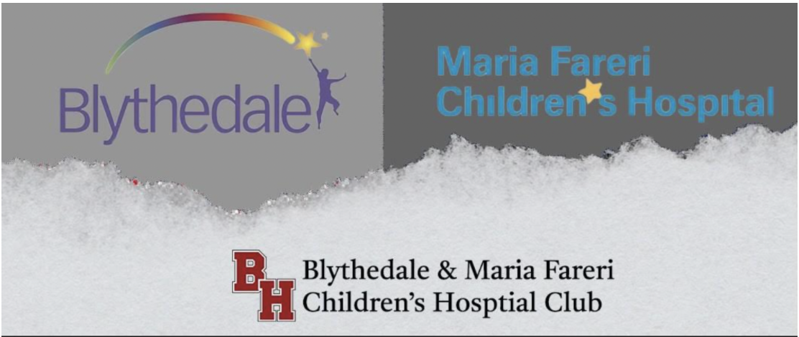
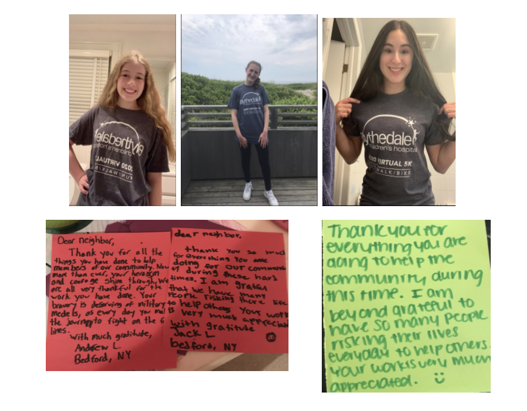

Byram Blythedale & Maria Fareri Children’s Hospital Club
Blythedale and Maria Fareri are both children’s hospitals. Blythedale focuses on rehabilitation, and Maria Fareri is a general advanced pediatric center. The mission of our club is to raise money for the hospitals and volunteer at the hospitals (once we are able to). Our first meeting will be Wednesday, September 29th after school. More information about the meeting will be posted on Google Classroom (xuqz6dr). If you are not able to attend but are interested, please email levys22@byramhills.net and schwartz22@byramhills.net.
 